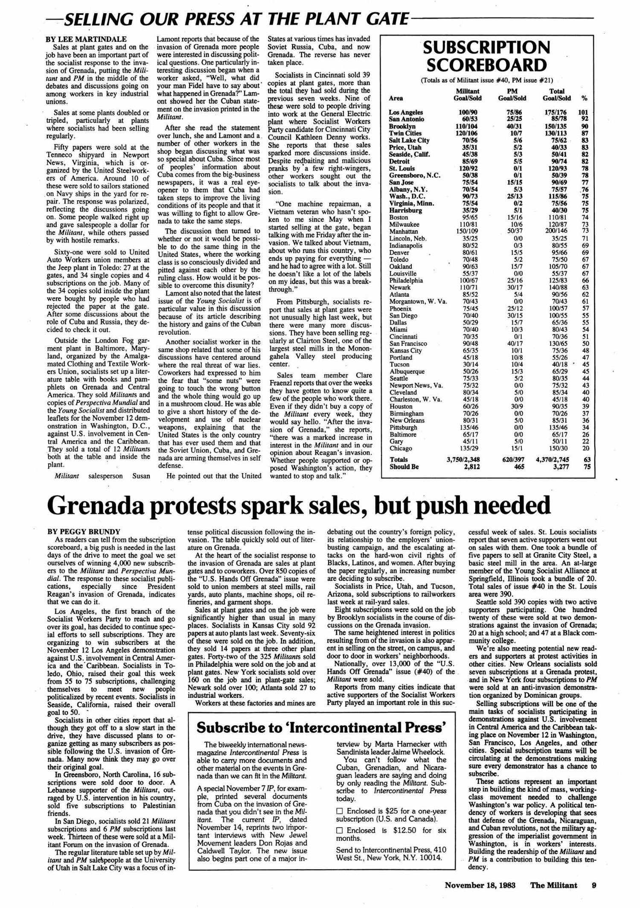
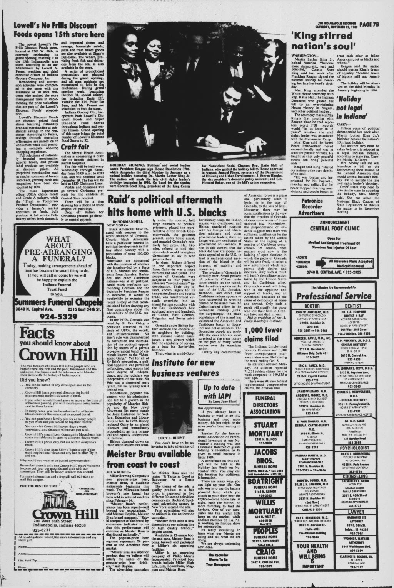

HN-743 · November 12, 1983 · War, Conflict & Security > Military Operations & Mobilization > Strategic operations
Source: Indianapolis Recorder, p. 19 — original commentary page.
Report: A column by Norman Hill emphasized Black Americans' concern about the U.S.-led invasion of the predominantly Black Caribbean island and urged consideration of Grenada's political history before deciding whether intervention was justified.
Assessment: A reasoned contemporaneous political perspective, not an operational finding. Its significance lies in broadening the source base beyond executive-branch statements; claims about motives and battlefield conduct need independent documentation.
Authentic images retrieved from The Militant archive and Hoosier State Chronicles (Indiana State Library). Article crops are located using the archive's own OCR word coordinates and rendered at native crop resolution; article clips are assembled from the archive's own article-block images; page images marked "archive tiles" are stitched from the archive's own tiled page service at its 256-px tile cap; page images marked "issue PDF" are single pages rasterised from the archive's own issue PDF, with the page chosen by matching the headline against the PDF's text layer; page scans are reduced-size access renditions. No images were generated, mocked, or retouched.


Status: Archive images acquired
Authentic archive-owned image renditions were retrieved for this record and are displayed above. The source-acquisition manifest preserves the original pre-acquisition feasibility assessment.
URL (preserved verbatim): https://newspapers.library.in.gov/?a=d&d=INR19831112-01.1.19
Saved research report: Historical_Newspaper_Event_Research_728-752_2026-10-23.md
Evidence note: A newspaper report means a historical publication made a claim; it does not establish that claim as fact. Contemporary reporting is separated from later scholarly context and our own assessment.